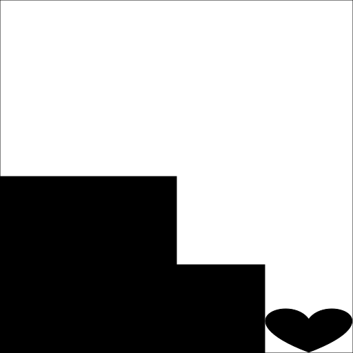
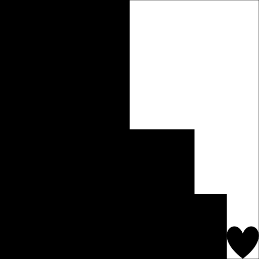
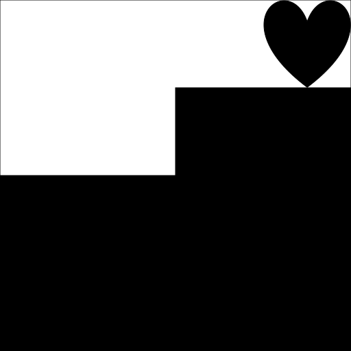
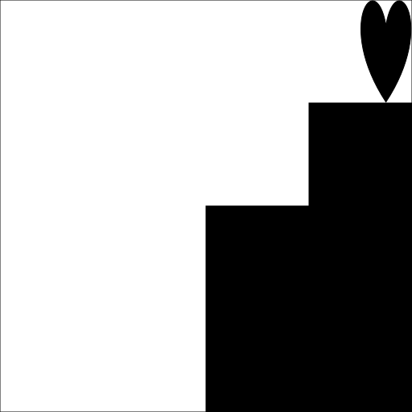
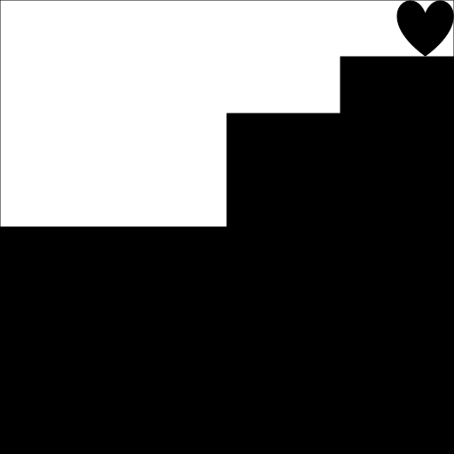

Source style guide — styling will be graded. Guide can be found here.
Unsubmit policy — can unsubmit upon noticing overlooked errors. Unsubmit wisely!
Applicative-order evaluation
Normal-order evaluation
Applicative-order evaluation
// Define function
function square(x) {
return x * x;
}
// Start
square(2 * 2);
// Evaluate the arguments...
square(4);
// ...and then apply.
4 * 4;
// Evaluated
16;
Normal-order evaluation
// Define function
function square(x) {
return x * x;
}
// Start
square(2 * 2);
// Fully expand...
(2 * 2) * (2 * 2);
// ...and then reduce.
4 * 4;
// Evaluated
16;
// Define functions
function p() {
return p();
}
function test(x, y) {
return x === 0 ? 0 : y;
}
test(0, p());
Applicative-order versus normal-order?
// Define functions
function p() {
return p();
}
function test(x, y) {
return x === 0 ? 0 : y;
}
test(0, p());
// Evaluate the arguments...
test(0, p());
// ...and then evaluate the arguments...
test(0, p());
// ...and then evaluate the arguments...
test(0, p());
// ...and then evaluate the arguments?!
test(0, p());
Applicative-order evaluation fails!
// Define functions
function p() {
return p();
}
function test(x, y) {
return x === 0 ? 0 : y;
}
test(0, p());
// Fully expand...
0 === 0 ? 0 : p();
// ...and then reduce.
true ? 0 : p();
// Evaluated
0;
Normal-order evaluation works!
Recursive process
// Declare function
function factorial(n) {
return n === 1
? 1
: n * factorial(n - 1);
}
// Start
factorial(4);
// Expanded
4 * factorial(3);
4 * (3 * factorial(2));
4 * (3 * (2 * factorial(1)));
4 * (3 * (2 * 1));
// Collapsed
4 * (3 * 2);
4 * 6;
24;
Recursive processes accumulate deferred operations.
Iterative process
// Declare functions
function factorial(n) {
return fact_iter(1, 1, n);
}
function fact_iter(product, counter, max_count) {
return counter > max_count
? product
: fact_iter(counter * product,
counter + 1,
max_count);
}
// Start
factorial(4);
// Evaluated
fact_iter(1, 1, 4);
fact_iter(1, 2, 4);
fact_iter(2, 3, 4);
fact_iter(6, 4, 4);
fact_iter(24, 5, 4);
24;
Iterative processes track the "metadata".
Don't confuse functions with processes!
Recursive functions can very well give rise to both recursive and iterative processes.
Look for deferred operations!
Non-linear recursive processes often give rise to tree recursion.
// Declare function
function fib(n) {
return n === 0 ? 0 :
n === 1 ? 1 :
fib(n - 1) + fib(n - 2);
}
// Non-linear recursive process arisen
fib(4);
fib(3) + fib(2);
(fib(2) + fib(1)) + (fib(1) + fib(0));
((fib(1) + fib(0)) + fib(1)) + (fib(1) + fib(0));
((1 + fib(0)) + fib(1)) + (fib(1) + fib(0));
((1 + 0) + fib(1)) + (fib(1) + fib(0));
(1 + fib(1)) + (fib(1) + fib(0));
(1 + 1) + (fib(1) + fib(0));
2 + (fib(1) + fib(0));
2 + (1 + fib(0));
2 + (1 + 0);
2 + 1;
3;
The number of operations grows at an alarming rate.
Some stuff to note:
Functions from previous questions may be reused.
Keep in mind the efficiency of your programmes.
Assume that all runes use constant space, and that all primitive operations on runes take constant time.
function moony_1(rune) {
return stack(beside(circle, blank),
beside(square, rune));
}
function moony_2(n) {
return n === 1
? circle
: moony_1(moony_2(n - 1));
}
function moony(n) {
return n === 1
? circle
: stack_frac(1 / n,
beside_frac(1 / n, circle, blank),
beside_frac(1 / n, square, moony(n - 1)));
}
moony_1: \(\Theta(1), O(1), O(n), O(n^2), \Omega(1)\)
moony_2: \(\Theta(n), O(n), O(n^2), \Omega(n), \Omega(1)\)
moony: \(\Theta(n), O(n), O(n^2), \Omega(n), \Omega(1)\)
function f1(rune_1, n, rune_2) {
return n === 0
? rune_2
: f1(rune_1, n - 1,
beside(rune_1, stack(blank, rune_2)));
}
show(f1(square, 3, heart));
show(f1(square, 3, heart));
show(f1(, 3, ));
show(f1(, 3 - 1, beside(, stack(, ))));
show(f1(, 2, beside(, stack(, ))));
show(f1(, 2, beside(, )));
show(f1(, 2, ));
show(f1(, 2 - 1, beside(, stack(, ))));
show(f1(, 1, beside(, stack(, ))));
show(f1(, 1, beside(, )));
show(f1(, 1, ));
show(f1(, 1 - 1, beside(, stack(, ))));
show(f1(, 0, beside(, stack(, ))));
show(f1(, 0, beside(, )));
show(f1(, 0, ));
show();
function f2(rune, n) {
return n === 0
? rune
: stack(beside(blank, f2(rune, n - 1)),
square);
}
show(f2(heart, 3));
show(f2(heart, 3));
show(f2(, 3));
show(stack(beside(, f2(, 3 - 1)), ));
show(stack(beside(, f2(, 2)), ));
show(stack(beside(, stack(beside(, f2(, 2 - 1)), )), ));
show(stack(beside(, stack(beside(, f2(, 1)), )), ));
show(stack(beside(, stack(beside(, stack(beside(, f2(, 1 - 1)), )), )), ));
show(stack(beside(, stack(beside(, stack(beside(, f2(, 0)), )), )), ));
show(stack(beside(, stack(beside(, stack(, )), )), ));
show(stack(beside(, stack(beside(, ), )), ));
show(stack(beside(, stack(, )), ));
show(stack(beside(, ), ));
show(stack(, ));
show();
function expt(b, n) {
return n === 0 ? 1 : b * expt(b, n - 1);
}
Recursive process or iterative process?
Time and space complexities:
b and dynamic n?
n and dynamic b?
// Declare function
function expt(b, n) {
return n === 0 ? 1 : b * expt(b, n - 1);
}
// Start
expt(2, 3);
// Expanded
2 * expt(2, 2);
2 * (2 * expt(2, 1));
2 * (2 * (2 * expt(2, 0)));
// Collapsed
2 * (2 * (2 * 1));
2 * (2 * 2);
2 * 4;
8;
expt incurs a recursive process.
function expt(b, n) {
return n === 0 ? 1 : b * expt(b, n - 1);
}
Let \(t_1(n)\) and \(s_1(n)\) be the time and space that it takes expt to compute \(b^n\) for a fixed \(b\), respectively.
\(t_1\) has order of growth \(\Theta(n)\)
\(s_1\) has order of growth \(\Theta(n)\)
function expt(b, n) {
return n === 0 ? 1 : b * expt(b, n - 1);
}
Let \(t_2(n)\) and \(s_2(n)\) be the time and space that it takes expt to compute \(b^n\) for a fixed \(n\), respectively.
\(t_2\) has order of growth \(\Theta(1)\)
\(s_2\) has order of growth \(\Theta(1)\)
// Helper functions declared
function square(x) {
return x * x;
}
function is_even(n) {
return n % 2 === 0;
}
// fast_expt declared
function fast_expt(b, n) {
return n === 0
? 1
: is_even(n)
? square(fast_expt(b, n / 2))
: b * fast_expt(b, n - 1);
}
// Start
fast_expt(2, 8);
// Expanded
square(fast_expt(2, 4));
square(square(fast_expt(2, 2)));
square(square(square(fast_expt(2, 1))));
square(square(square(2 * fast_expt(2, 0))));
// Collapsed
square(square(square(2 * 1)));
square(square(square(2)));
square(square(4));
square(16);
256;
fast_expt computes in \(\Theta(\log(n))\) time.
// Helper functions declared
function square(x) {
return x * x;
}
function is_even(n) {
return n % 2 === 0;
}
// fast_expt_int declared
function fast_expt_int(b, n) {
return n < 0
? 1 / fast_expt_int(b, -n)
: n === 0
? 1
: is_even(n)
? square(fast_expt_int(b, n / 2))
: b * fast_expt_int(b, n - 1);
}
// Start
fast_expt_int(2, -8);
// Expanded
1 / fast_expt_int(2, 8);
1 / square(fast_expt_int(2, 4));
1 / square(square(fast_expt_int(2, 2)));
1 / square(square(square(fast_expt_int(2, 1))));
1 / square(square(square(2 * fast_expt_int(2, 0))));
// Collapsed
1 / square(square(square(2 * 1)));
1 / square(square(square(2)));
1 / square(square(4));
1 / square(16);
1 / 256;
0.00390625;
fast_expt_int accounts for integer powers.
Operations are deferred; incurs recursive process.
// Declare functions
function iter(exp, base, product) {
return exp === 0
? product
: exp % 2 === 0
? iter(exp / 2, base * base, product)
: iter(exp - 1, base, base * product);
}
function fast_expt_iter(b, e) {
return iter(e, b, 1);
}
// Start
fast_expt_iter(2, 8);
// Evaluated
iter(8, 2, 1);
iter(4, 4, 1);
iter(2, 16, 1);
iter(1, 256, 1);
iter(0, 256, 256);
256;
No deferred operations; incurs iterative process.